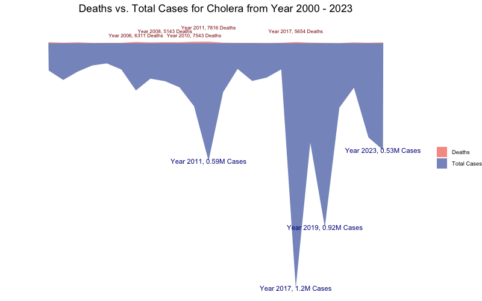
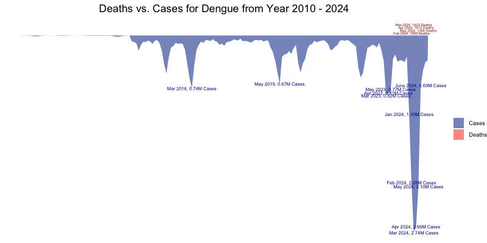
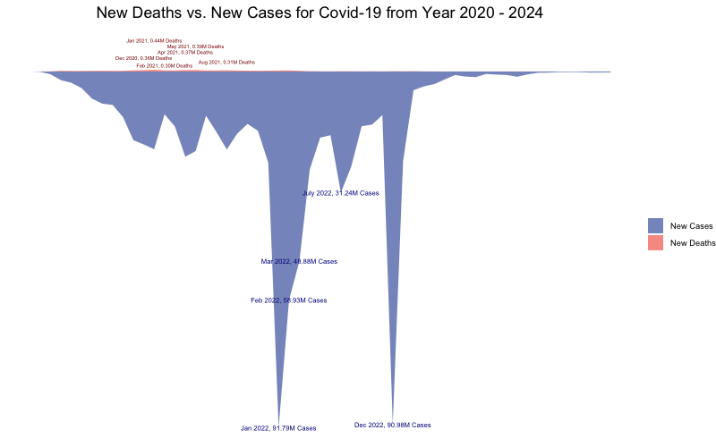
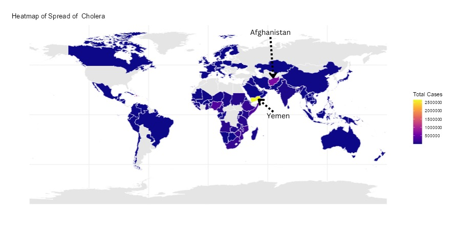
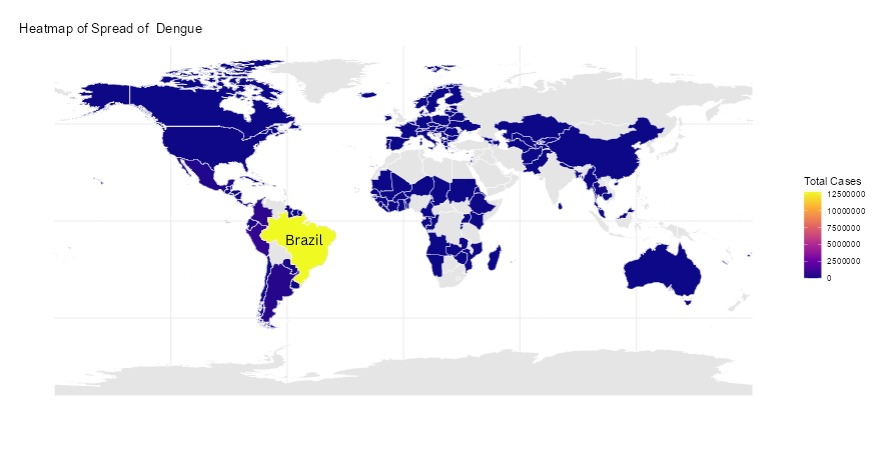
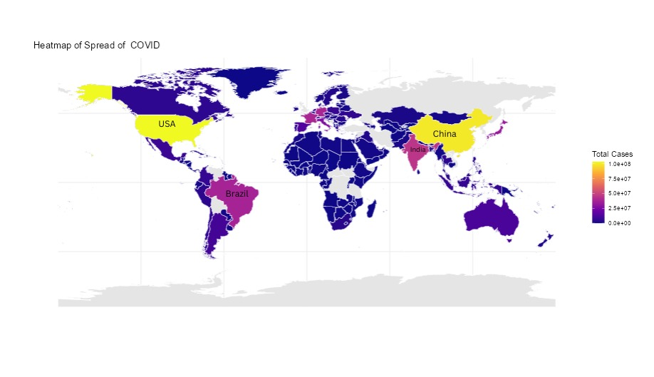
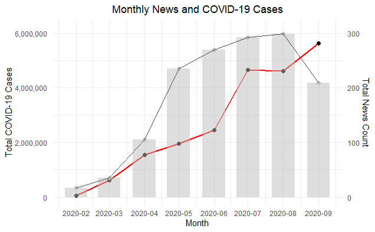
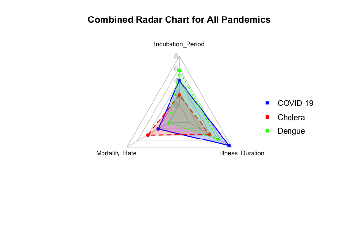

Introduction
We use data visualizations to explore the similarities and differences among some significant pandemics from human history, including Cholera, Dengue, and COVID-19.
Exploration
Total cases and deaths over time



Geographical spread of pandemics over time



News reports impact on pandemics spread

Differences in disease parameters

Conclusions
- Dengue occurred seasonally, mostly late spring to early summer. Cholera outbreaks are closely related to contamination of water sources. COVID-19 had higher mortality rate at the early stage and the total infected cases had spiked at the late stage.
- The monthly number of news articles related to COVID-19 and the month total cases of infected COVID-19 are inversely correlated.
- Among the three pandemics, COVID-19 has the longest illness duration; Cholera has the highest mortality rate; Dengue has the longeset incubation period.
Future Directions
- Emphasize on the time stamps of each huge outbreaks and research on the reasons behind them.
- Research on other pandemics and compare the results.